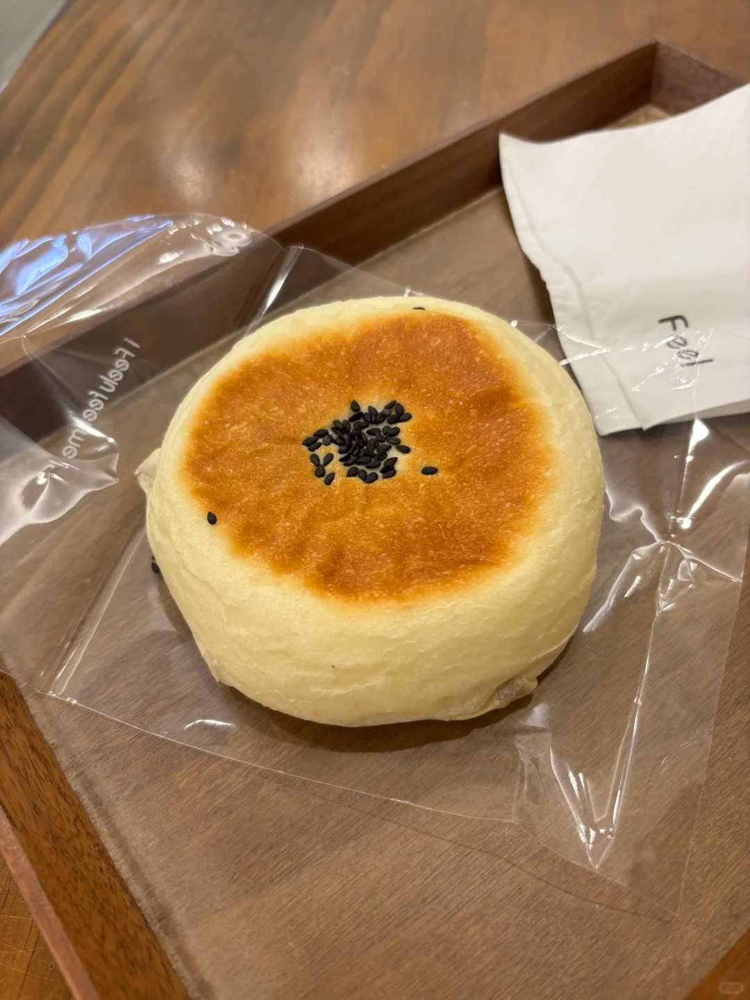

日式红豆包



日式红豆包是日本极具代表性的甜面包，造型多样，有圆形、花型、吐司形等，其面包体松软香甜，有着独特的麦香，包裹着绵密湿糯的红豆馅，红豆馅香浓清甜。面包部分通常以高筋面粉为主，搭配牛奶、糖、耐高糖酵母、盐、无盐黄油等，有的配方还会加入低筋面粉、奶粉等，以调整口感和风味。红豆馅则主要由红豆、糖粉（或细砂糖）、玉米油制作而成，为了增加风味，还可加入适量的水和麦芽糖等。 在日本，红豆沙有着悠久的历史，深受人们喜爱。红豆包作为红豆沙与面包的结合，不仅是一种美味的食品，也体现了日本饮食文化中对传统食材的巧妙运用和对甜点制作工艺的追求。它常被作为早餐或下午茶点，搭配牛奶或茶食用，是日本人日常生活中常见的美味。
制作方法：